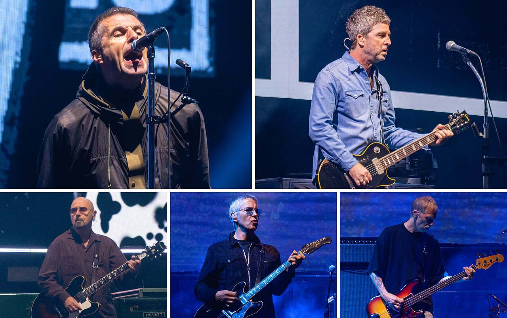

Oasis es una banda de rock inglesa formada en Manchester en 1991.
Se les considera el grupo con mayor éxito mundial de la era Britpop y una de las bandas de rock más influyentes de todos los tiempos.

| Nombre | Intsrumento |
|---|---|
| Liam Gallagher | Voz |
| Noel Gallagher | Voz, guitarrista principal |
| Paul "Bonehead" Arthurs | Guitarra ritmitca |
| Gem Archer | Guitarra principal |
| Andy Bell | Bajo |
| Titulo | Año |
|---|---|
| Definitely Maybe | 1994 |
| Morning Glory | 1995 |
| Be Here Now | 1997 |
| Standing On The Shoulder Of Giants | 1999 |
| Heathen Chemistry | 2002 |
| Don´t Believe The Truth | 2005 |
| Dig Out Your Soul | 2008 |
Todos los derechos reservados